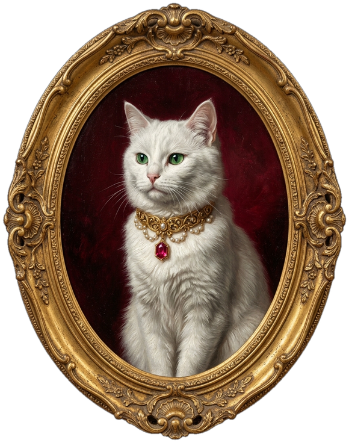
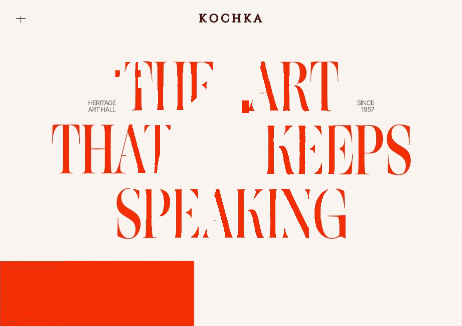
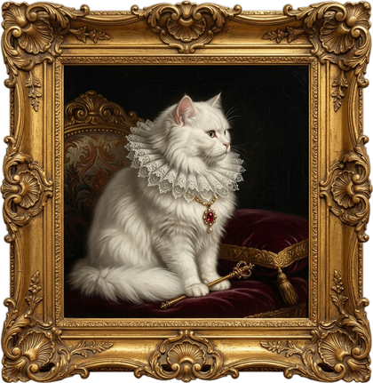
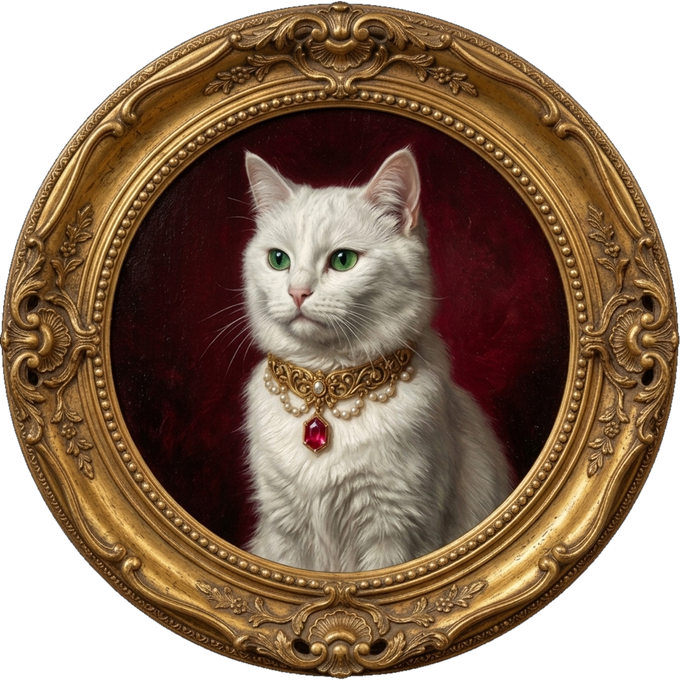
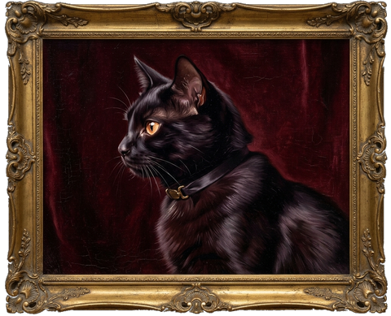
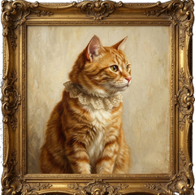
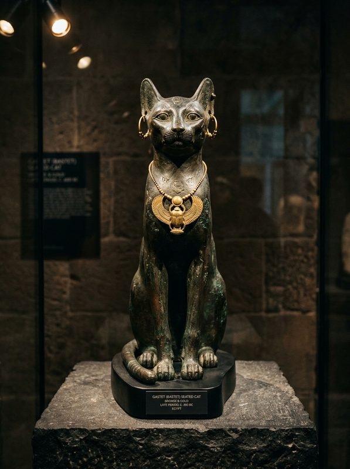
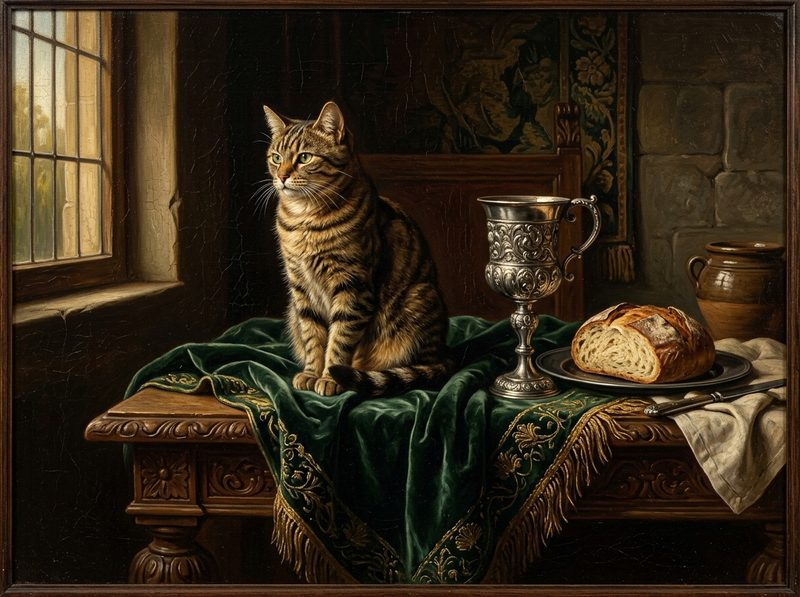
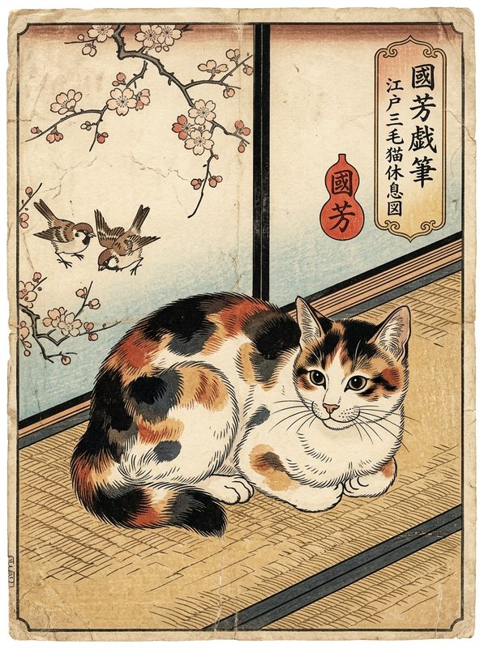
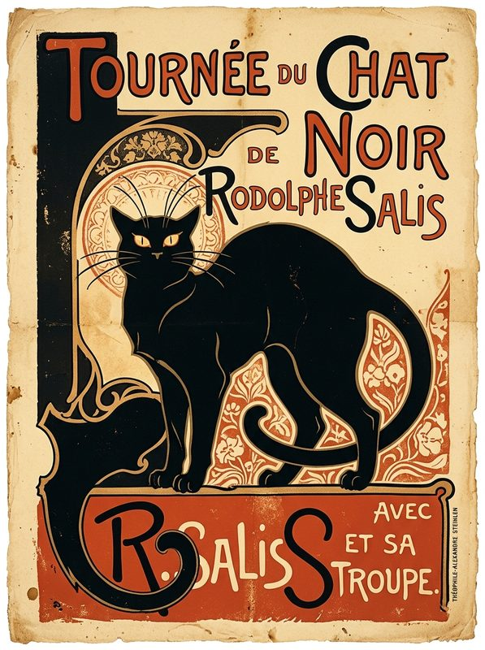

Masterpiece Sanctuary
KOCHKA PERMANENT




Explore royal & classical cat portraits from 600 BC to the 20th century.

The monumental visual centerpiece of the exhibition. Encased in an opulent baroque oval frame, the Empress's watchful, hypnotic emerald gaze pierces through saturated crimson red tones while wearing an ornate ruby and pearl necklace. It stands as an allegory for feline sovereignty—an art form that keeps speaking across generations.
Experience 'The Art That Keeps Speaking' in the historic grand wing of Heritage Art Hall.
Access to all exhibition wings + digital audio tour pass
90-minute small-group tour led by Head Curator Moreau
After-hours private viewing with string quartet & vintage champagne
Newsletter access, basic gallery browsing, and monthly featured spotlights.
Full audio-guide access, deep-zoom high-res downloads, and private virtual exhibition invites.
Physical quarterly art prints mailed home, early access to new digital wings, and curator events.
A global digital museum of classical and contemporary feline art across centuries.
Historic paintings from diverse cultures and classical epochs.
Contemporary artistic interpretations of cats in modern art.
Sophisticated gallery web experience built for art lovers.
742 Boulevard des Arts · Open Tuesday–Sunday 10:00–21:00
Filterable global museum collection spanning Ancient Egypt, Dutch Golden Age, Japanese Ukiyo-e, and 20th-century European Modernism.

Valery Antonov & Moreau · 1963 · France
Valery Antonov · 1957 · St. Petersburg
Valery Antonov · 1968 · Geneva
Elena Rostova · 1971 · Paris

Saqqara Sculptor · c. 600 BC · Egypt

School of Jan Steen · c. 1645 · Amsterdam

Utagawa Kuniyoshi · 1850 · Edo, Japan

Théophile Steinlen · 1896 · Montmartre
The Met Open Access API provides thousands of digitized high-res classical feline artifacts & antiquities.
Exceptional open repository of Dutch Golden Age paintings, chiaroscuro portraits, and still lifes.
Vast global repositories of Japanese Edo-period Ukiyo-e feline woodblock prints (Utagawa Kuniyoshi).
Public API access for modern, impressionist, and Art Nouveau feline masterworks and lithographs.